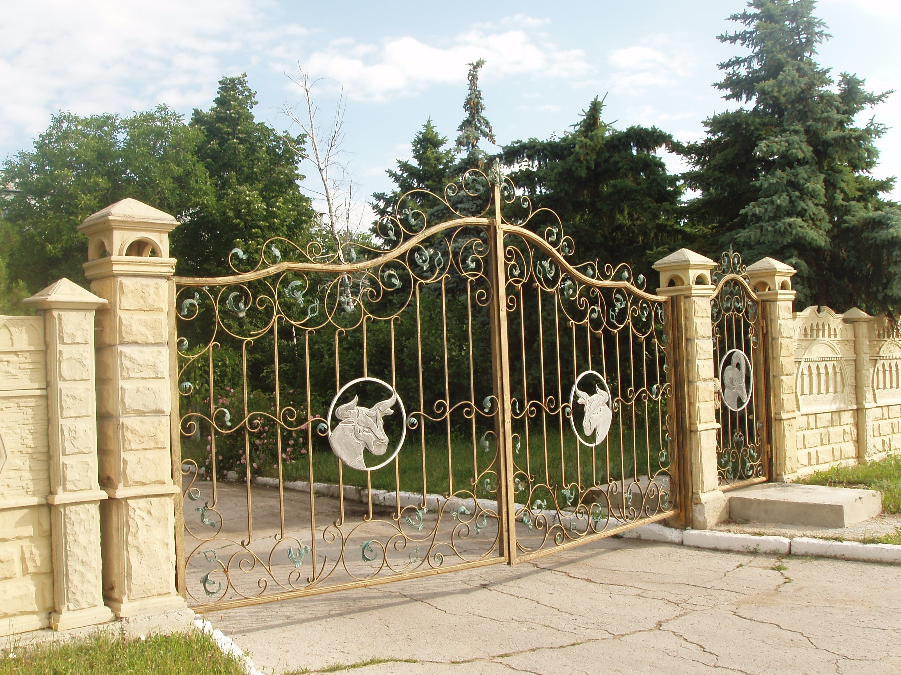
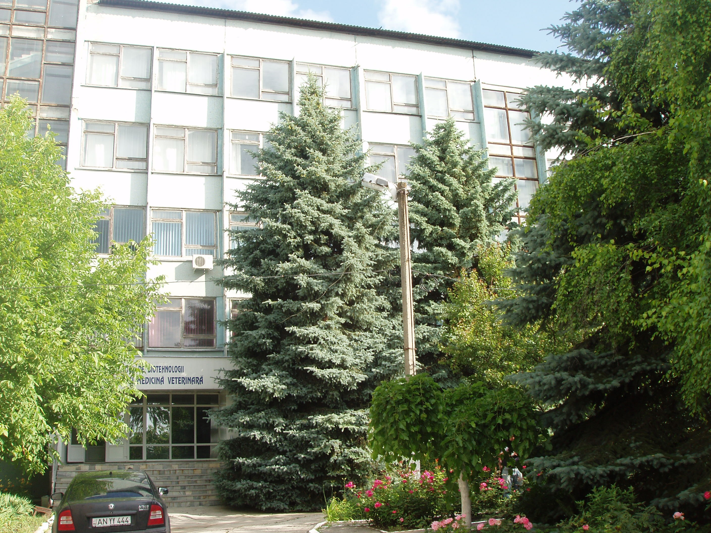

- Institutul de Cercetări Ştiinţifice în domeniul Zootehniei şi Medicinii Veterinare (a.a. 1958 - 1990);
- Î.S. Institutul de Cercetări Ştiinţifice şi Tehnologice în domeniul Zootehniei şi Medicinii Veterinare „TEVIT” (a.a. 1990 - 1997)- Î.S. Institutul Naţional pentru Zootehnie şi Medicină Veterinară (a.a. 1997- 2005)
- Î.S. Institutul de Zootehnie şi Medicină Veterinară (a.a. 2005 - 2008)
- I.P. Institutul Ştiinţifico-Practic de Biotehnologii în Zootehnie şi Medicină Veterinară” (a. 2008).

Obiectivul principal al activității institutului, constă în asigurarea științiică a sectorului zootehnic
din Republica Moldova
- concentrarea potenţialului ştiinţific asupra problemelor sporirii eficienţei exploatării animalelor de fermă;
- efectuarea cercetărilor ştiinţifice complexe în ramurile de bază ale sectorului;
- pregătirea cadrelor ştiinţifice de înaltă calififare în domeniile de activitate;
- reciclarea cadrelor din sectorul zootehnic;
- şcolarizarea crescătorilor de animale;
- propagarea şi implementarea dirijată în practică a elaborărilor institutului şi ale zoothniei mondiale.
- Elaborarea principiilor ştiinţifice de menţinere şi diversificare a fondului genetic de animale omologate în ţară şi asigurarea funcţionării optime a reproducerii lor;
- Valorificarea raţională a potenţialului productiv al animalelor de rasă prin controlul genetic al caracterelor productiv-utile cantitative şi calitative;
- Elaborarea principiilor noi de sporire a variabilităţii ereditare raselor de animale crescute în ţară;
- Crearea raselor, tipurilor, liniilor, hibrizilor noi cu productivitate şi adaptabilitate sporită prin aplicarea fondului genetic autohton şi a celui din import;
- Elaborarea tehnologiilor performante de creştere, exploatare, reproducere şi nutriţie a animalelor;
- Elaborarea tehnologiilor noi privind producerea şi conservarea furajelor în scopul realizării potenţialului genetic de producţie al animalelor;
- Elaborarea procedeelor, metodelor şi schemelor noi de combatere şi profilaxie a maladiilor la animalele de fermă
- pentru ştiinţa şi practica veterinară din ţară au fost elaborate măsuri şi metode noi şi eficiente de iradicare şi profilaxie a maladiilor la animale şi păsări. Anume acestora le aparţine într-o mare măsură succesul securităţii sanitar-veterinare al Republicii Moldova, care deja mai multe decenii este în lista ţărilor favorabile.